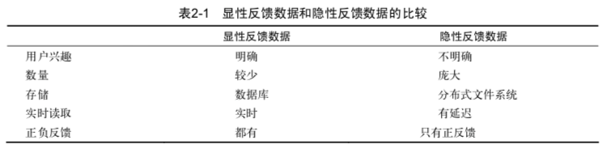
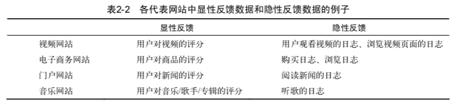
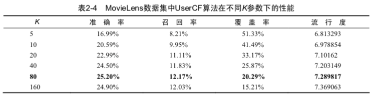
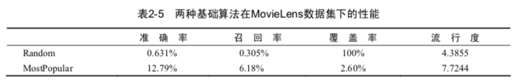
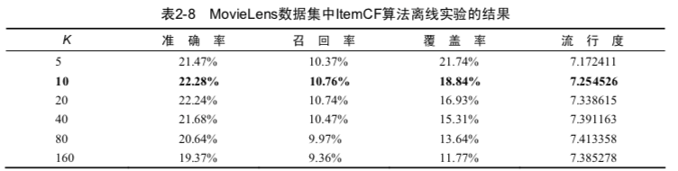

《推荐系统实战》读书笔记（一）
本文将介绍《推荐系统实战》一书的前三章：
- 好的推荐系统
- 利用用户行为数据
- 推荐系统冷启动问题
第一章 好的推荐系统
该部分主要介绍了为什么我们需要一个推荐系统，以及如何衡量推荐系统的优劣。
1.1 什么是推荐系统
当今社会存在海量的数据，一个人可能很难做出筛选。面对这种信息过载的问题，就需要一个工具来帮助我们进行筛选和建议，于是推荐系统应运而生。
推荐系统的任务就是联系用户和信息，一方面帮助用户发现对自己有价值的信息，另一方面让信息能够展现在对它感兴趣的用户面前，实现信息消费者和信息生产者的双赢。
为了解决信息过载的问题，之前的解决方案是分类目录和搜索引擎。但是，推荐系统不需要用户提供明确的需求，而是通过分析用户的历史行为给用户的兴趣建模，从而主动给用户推荐信息。
推荐系统能够更好地发掘长尾信息，有利于个性化推荐。个性化推荐通过分析大量用户行为日志，给不同用户提供不同的个性化页面展示，来提高网站的点击率和转化率。个性化推荐的成功需要两个条件，一是信息过载，二是用户大部分时候没有明确的需求。
1.2 如何评测推荐系统
一个好的推荐系统需要综合考虑用户、网站和内容提供商三方的利益，因此制定了一些指标来衡量一个推荐系统。在推荐系统中，主要有3种评测推荐效果的实验方法，即离线实验、用户调查和在线实验。
评测指标方面主要有用户满意度（点击率、用户停留时间、转化率）、预测准确度（RMSE、MAE、召回、准确）、覆盖率（描述一个系统对长尾的发掘能力）、多样性（尽量覆盖用户广泛的兴趣）、新颖性、惊喜度、信任度、实时性、健壮性。
第二章 利用用户行为数据
本章主要介绍了挖掘用户信息的常用模型，包括基于邻域的方法、隐语义模型、基于图的模型。
2.1 用户行为数据介绍
用户行为在个性化推荐系统中一般分两种——显性反馈行为和隐性反馈行为。显性反馈行为包括用户明确表示对物品喜好的行为。隐性反馈行为指的是那些不能明确反应用户喜好的行为。


2.3 实验设计和算法评测
- 召回率（Recall）：$$Recall = \frac{\sum_{u} \vert R(u) \cap T(u) \vert}{\sum_{u} \vert T(u) \vert}$$
- 准确率（Precision）：$$Precision = \frac{\sum_{u} \vert R(u) \cap T(u) \vert}{\sum_{u} \vert R(u) \vert}$$
- 覆盖率（Coverage）：$$Coverage = \frac{\cup_{u \in U} R(u)}{\vert I \vert}$$
2.4 基于邻域的算法
基于用户的协同过滤算法
算法核心思想：在一个在线推荐系统中，当用户A需要个性化推荐时，可以先找到和他有相似兴趣的其它用户，然后把那些用户喜欢的、而用户A没有听说过的物品推荐给A，这种方法称为基于用户的协同过滤算法。
可以看出，这个算法主要包括两步：
找到和目标用户兴趣相似的用户集合——计算两个用户的兴趣相似度；
找到这个集合中的用户喜欢的，且目标用户没有听说过的物品推荐给目标用户——找出物品推荐。
给定用户u和用户v，令$$N(u)$$表示用户$$u$$感兴趣的物品集合，$$N(v)$$表示用户$$v$$感兴趣的物品集合，那么可以通过Jaccard公式或者通过余弦相似度公式计算：
$$Jaccard: w_{uv} = \frac{\vert N(u) \cap N(v) \vert}{\vert N(u) \cup N(v) \vert}$$
$$Cos: w_{uv} = \frac{\vert N(u) \cap N(v) \vert}{\sqrt{\vert N(u)\vert \vert N(v) \vert}}$$
建立相似度矩阵分为两个步骤：
- 建立物品到用户的倒查表$$T$$，表示该物品被哪些用户产生过行为；
- 根据倒查表T，建立用户相似度矩阵$$W$$：在$$T$$中，对于每一个物品$$i$$，设其对应的用户为$$(j,k)$$，在$$W$$中，更新相应的元素值，$$w[j][k]=w[j][k]+1$$，以此类推，扫描完倒查表$$T$$中的所有物品后，就可以得到最终的用户相似度矩阵$$W$$，这里的$$W$$是余弦相似度中的分子部分，然后将$$W$$除以分母可以得到最终的用户兴趣相似度。
之后，给用户推荐和他兴趣最相似的K个用户喜欢的物品。
$$p(u, i) = \sum_{v \in S(u, K) \cup N(i)} w_{uv} r_{vi}$$
其中$$p(u,i)$$表示用户$$u$$对物品$$i$$的感兴趣程度，$$S(u,k)$$表示和用户$$u$$兴趣最接近的$$K$$个用户，$$N(i)$$表示对物品$$i$$有过行为的用户集合，$$w_{uv}$$表示用户$$u$$和用户$$v$$的兴趣相似度，$$r_{vi}$$表示用户$$v$$对物品$$i$$的兴趣。
我们还可以在此基础上进行改进，改进思想是：两个用户对冷门物品采取过同样的行为更能说明他们兴趣的相似度。
$$w_{uv} = \frac{\sum_{i \in N(u) \cap N(v)} \frac{1}{\log (1 + \vert N(i) \vert)}}{\sqrt{\vert N(u)\vert \vert N(v) \vert}}$$


基于物品的协同过滤算法
ItemCF算法并不利用物品的内容属性计算物品之间的相似度，它主要通过分析用户的行为记录计算物品之间的相似度。我们可以用下面的公式定义物品的相似度:
$$w_{ij} = \frac{\vert N(i) \cap N(j) \vert}{\vert N(i) \vert}$$
$$w_{ij} = \frac{\vert N(i) \cap N(j) \vert}{\sqrt{\vert N(i) \vert \vert N(j) \vert}}$$
分母$$\vert N(i) \vert$$是喜欢物品$$i$$的用户数，而分子$$是同\vert N(i) \cap N(j) \vert$$是喜欢物品$$i$$和物品$$j$$的用户数。因此，上述公式可以理解为喜欢物品$$i$$的用户中有多少比例的用户也喜欢物品$$j$$。
和UserCF算法类似，用ItemCF算法计算物品相似度时也可以首先建立用户—物品倒排表(即对每个用户建立一个包含他喜欢的物品的列表)，然后对于每个用户，将他物品列表中的物品两两在共现矩阵中加1。
在得到物品之间的相似度后，ItemCF通过如下公式计算用户$$u$$对一个物品$$j$$的兴趣：
$$p_{uj} = \sum_{i \in N(u) \cap S(j, K)} w_{ji} r_{ui}$$
这里$$N(u)$$是用户喜欢的物品的集合，$$S(j,K)$$是和物品$$j$$最相似的$$K$$个物品的集合，$$w_{ji}$$是物品$$j$$和$$i$$
的相似度，$$r_{ui}$$是用户$$u$$对物品$$i$$的兴趣。
下表列出了在MovieLens数据集上ItemCF算法离线实验的各项性能指标的评测结果。该表包括算法在不同$$K$$值下的性能。

根据表中的数据我们可以得出如下结论。
- 精度（准确率和召回率）可以看到ItemCF推荐结果的精度也是不和$$K$$成正相关或者负相关的，因此选择合适的$$K$$对获得最高精度是非常重要的。
- 流行度和UserCF不同，参数$$K$$对ItemCF推荐结果流行度的影响也不是完全正相关的。 随着$$K$$的增加，结果流行度会逐渐提高，但当$$K$$增加到一定程度，流行度就不会再有明显变化。
- 覆盖率，$$K$$增加会降低系统的覆盖率。
ItemCF同样可以改进，$$w_{ij} = \frac{\sum_{u \in N(i) \cap N(j)} \frac{1}{\log (1 + \vert N(u)) \vert)}}{\sqrt{\vert N(i) \vert \vert N(j) \vert}}$$
UserCf vs ItemCF
- UserCF的推荐结果着重于反映和用户兴趣相似的小群体的热点，而ItemCF的推荐结果着重于维系用户的历史兴趣。
- UserCF可以给用户推荐和他有相似爱好的一群其他用户今天都在看的新闻，这样在抓住热点和时效性的同时，保证了一定程度的个性化。而ItemCF需要维护一张物品相关度的表，如果物品更新很快，那么这张表也需要很快更新，这在技术上很难实现。
- 在图书、电子商务和电影网站，物品更新速度不会特别快，一天一次更新物品相似度矩阵对它们来说不会造成太大的损失，是可以接受的。UserCF需要维护一个用户相似度的矩阵，而ItemCF需要维护一个物品相似度矩阵。从存储的角度说，如果用户很多，那么维护用户兴趣相似度矩阵需要很大的空间，同理，如果物品很多，那么维护物品相似度矩阵代价较大。
###2.5 隐语义模型
LFM隐语义模型逐渐成为推荐系统领域耳熟能详的名词。其实该算法最早在文本挖掘领域被提出，用于找到文本的隐含语义。相关的名词有LSI、pLSA、LDA和Topic Model。
LFM通过如下公式计算用户$$u$$对物品$$i$$的兴趣：
$$p(u, i) = r_{ui} = p^T_{u} q_i = \sum_{f=1}^{F} p_{u,k} q_{i,k}$$
这个公式中$$p_{u,k}$$和$$q_{i,k}$$是模型的参数，其中$$p_{u,k}$$度量了用户$$u$$的兴趣和第$$k$$个隐类的关系，而$$q_{i,k}$$度量了第$$k$$个隐类和物品$$i$$之间的关系。
推荐系统的用户行为分为显性反馈和隐性反馈。LFM在显性反馈数据(也就是评分数据)上解决评分预测问题并达到了很好的精度。不过本章主要讨论的是隐性反馈数据集，这种数据集的特点是只有正样本(用户喜欢什么物品)，而没有负样本(用户对什么物品不感兴趣)。 那么，在隐性反馈数据集上应用LFM解决TopN推荐的第一个关键问题就是如何给每个用户生成负样本。 一般情况下，对负样本采样遵循以下规则：
- 正负样本的平衡；
- 负采样要选择那些很热门，但是用户没有行为的物品。
按照上述的方式采样出了那些热门的、但用户却没有过行为的物品。经过采样，可以得到一个用户-物品集$$K = {(u, i)}$$，其中如果$$(u, i)$$是正样本，则有$$r_{ui} = 1$$，否则有$$r_{ui} = 0$$。然后，需要优化如下的损失函数来找到最合适的参数$$p$$和$$q$$：
$$C = \sum_{(u,i) \in K} (r_{ui} - \hat{r}{ui})^2 = \sum{(u,i) \in K} (r_{ui} - \sum_{k=1}^{K} p_{u,k} q_{i,k})^2 + \lambda {\vert \vert p_u \vert \vert}^2 + \lambda {\vert \vert q_i \vert \vert}^2$$
$$\lambda {\vert \vert p_u \vert \vert}^2 + \lambda {\vert \vert q_i \vert \vert}^2$$是用来防止过拟合的正则化项，$$\lambda$$可以通过实验获得。要最小化上面的损失函数，可以利用SGD。
其次，我们通过实验对比了LFM在TopN推荐中的性能。在LFM中，重要的参数有4个：
- 隐特征的个数$$F$$；
- 学习速率$$\alpha$$；
- 正则化参数$$\lambda$$；
- 负样本/正样本比例ratio。
2.6 基于图的模型
略
第三章 推荐系统冷启动问题
推荐系统需要根据用户的历史行为和兴趣预测用户未来的行为和兴趣，因此大量的用户行为数据就成为推荐系统的重要组成部分和先决条件。 因此，当没有充足的数据的时候，冷启动问题就至关重要了。
冷启动问题主要分为3类：
- 用户冷启动：主要解决如何给新用户做个性化推荐；
- 物品冷启动：如何将新的物品推荐给用户；
- 系统冷启动：在一个新的网站上设计个性化推荐系统。
针对上述的冷启动问题，可以参考如下解决方案：
用户冷启动：
- 提供非个性化的推荐：例如热门排行榜；
- 利用用户注册提供的年龄、性别等数据进行粗粒度的推荐；
- 利用用户的社交账号登陆，导入用户的社交好友信息，推荐其好友喜欢的商品；
- 在用户登陆时对一些物品做反馈，收集用户的兴趣，然后推荐类型商品。
物品冷启动：
- 对于新加入的商品，可以利用内容信息，推荐给喜欢过相似商品的用户；
- 引入专家知识。
系统冷启动：
- 综合上述两种方案。